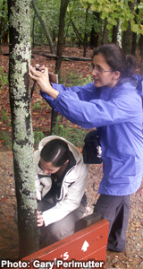

|
Chapel Hill Carrboro Pacers Youth Running Club |
|
|
Chapel Hill Carrboro Pacers Youth Running Club |
2019 Spring Season |
|
|
NEW LOCATION NEAR FINLEY GOLF COURSE |
|
|
19 March–06 June |
Communication via TeamSnap |
Boys and girls aged 7–18 join the Pacers for a competitive edge, for exercise, or just for fun. Runners are grouped according to age and ability, with shorter runs tailored for beginners and more vigorous runs for seasoned veterans. Whatever your ability, our volunteer coach teams are looking forward to offering creative sessions which aim to instill a love of running as a lifetime sport.
Parents are always welcome to join our runs!
We offer spring and fall seasons. Both seasons include a mix of road and trail running, varied workouts, time trials for PRs, scavenger hunt & relay fun, and an end-of-season family party. The spring season also offers an opportunity to focus on sprinting, and an introduction to hurdles, baton relays and field events. Coaches offer tips on such topics as running form, stretching, and hydration & nutrition at the beginning and informally throughout practices. Runners have the opportunity to join other Pacers in local races, but the emphasis is always on fun and participation with the Pacers—continually "on the run" since the 1970's!

Youngsters age 7 (or turning 7 during this current calendar year) through aged 18 are eligble to register. The price is $75 for the first child, and $55 for additional siblings.
Registration details are communcated to the parent email list prior to each season. Email ccpacers@gmail.com to join the list.
Due to the overwhelming growth of the Pacers in recent years and the desire to sustain a safe and personalized program, we limit the number of runners who may participate each season. Registration is on a first-come, first-served basis with returning runners having priority.
|  |
The Pacers is led by Head Coach Eimy Rivas Plata, and welcomes veteran and new volunteer coaches including parents, members of the UNC XC Club, and middle and high school junior coaches. Pacers culture enjoys and depends on the involvement of Pacer families: parents, caregivers, siblings, grandparents. Not all are runners, but there are many opportunities. Here are some of the many of the ways family members support Pacers:
|